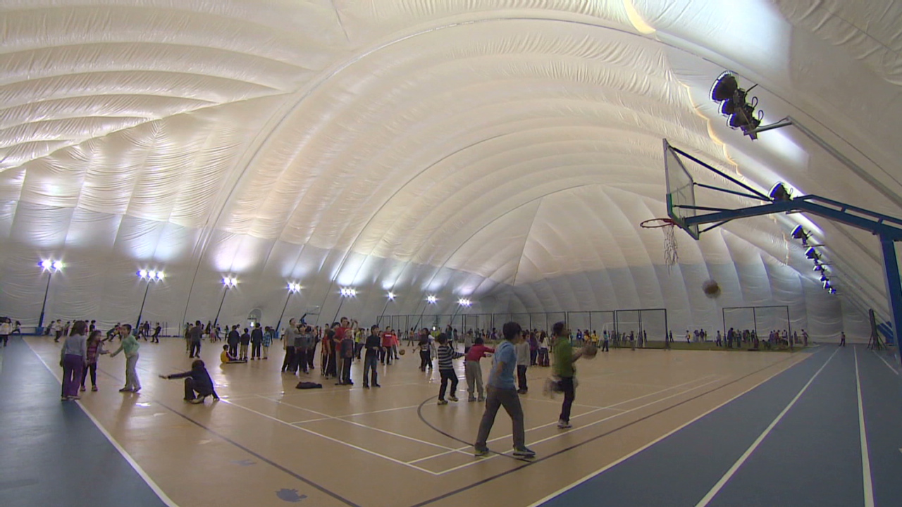

Over the last few years the industrial development in China has sky-rocketed and so has the air pollution levels. Less than 1 percent of the country’s 500 largest cities meet World Health Organization clean-air criteria. More than one-quarter of China’s land is either desert or facing desertification. At least ten provinces are below the World Bank’s water poverty level, and up to 40 percent of China’s rivers are reported to be seriously polluted (20 percent are so polluted that the water is too toxic for human contact). In conjunction with ongoing crises—Beijing being enveloped in smog; more than 16,000 dead, diseased pigs floating down Shanghai’s Huangpu River; reports of toxic cadmium-laced rice being sold in Guangdong Province.
The Air Quality Index (AQI) is used by the U.S. Environmental Protection Agency to report daily air quality. The AQI value takes the five major air pollutants regulated by the Clean Air Act into consideration (ground-level ozone, particulate matter, carbon monoxide, sulphur dioxide, and nitrogen dioxide scales pollution levels from 0 to 500 and assigns a colour to different number levels to measure how hazardous the air quality is on any given day .
Levels of 100 or below are known as “Blue Sky Days”, when smog is not easily visible. However, levels now reach up to 755 in Beijing. This is the highest level of air pollution since recording began in 2008, and was appropriately deemed “Beyond Index”. The World Health Organization suggests that scores near 500 contain more than twenty times the safe level of particulate matter in the air.
“Beijing has already become so polluted that people avoid the outdoors, and wealthy Chinese pay thousands of dollars for indoor air-purification systems. The super-rich build protective contraptions even over their yards. In 2013 the international school of beijing, which caters the children of foreign diplomats and upper-class Chinese, went a step further, and constructed a $ 5 million dome over it’s six tennis courts and playing fields, Other schools are following the suit, and Chinese air-purification market in booming. Of course most Beijing residents can-not afford such luxuries in their homes, nor can they afford to send their kids to the international school. ”
-from Homo Deus by Yuval Noah Harari
